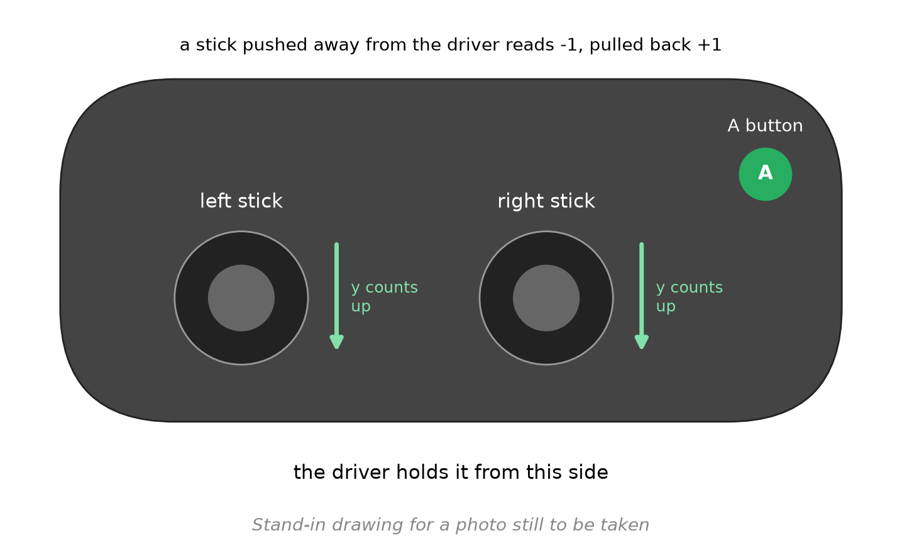
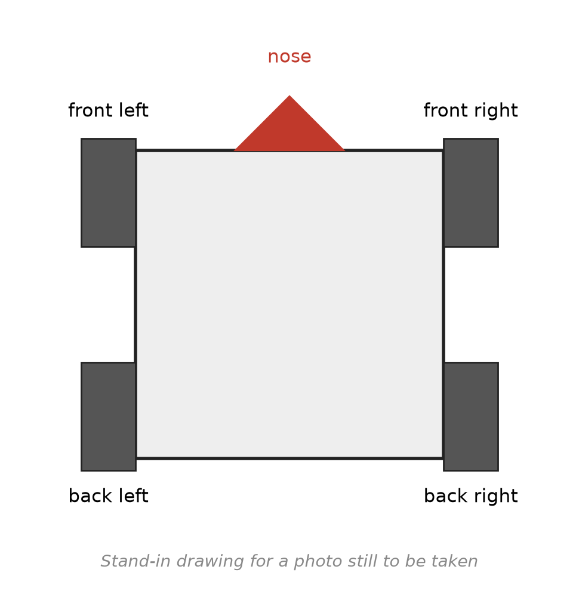

L2: the sticks drive the wheels¶
What you will have when this is done¶
The robot drives from the two sticks. The left stick runs the left wheels and the right stick runs the right wheels. Push both forward and it goes straight. Push one each way and it spins.
You also write the numbers down. The four stick axes, the A button and the loop count all go somewhere you can watch them.
Before you start¶
You can build the code and send it to the robot. That task is
task.laptop.You have started an OpMode from the Driver Station once, so you know where INIT, PLAY and STOP are. That task is
task.firstrun.The battery is charged and in, and gamepad 1 is paired.
Step 6 drives the robot, so leave it about 2 m of clear floor. No step before that one turns a wheel, and the robot can sit where it is.
Everything you write is in one folder:
TeamCode/src/main/java/org/firstinspires/ftc/teamcode/lessons/.

Gamepad 1 from above, with the left stick, the right stick and the A button labelled, and an arrow showing which way each y axis counts up.¶
The steps¶
Step 1: read the sticks and write the numbers down¶
Open L2aSticksOpMode.java. Fill TODO 1 to TODO 4. Nothing here moves a wheel.
A stick reads a number from -1 to 1. Pushed away from you it reads negative, which is backwards from the way anybody thinks about driving. So put a minus sign in front of each y axis as you read it. After that, forward is positive, and it stays that way for every lesson.
Tracker.publish takes a name and a value, and sends both to Panels and to the flight log. Copy
each name out of the TODO exactly: the test looks for the name it was given.
Four kinds of value go out here. A double for a stick, a boolean for the A button, an int for
the loop count, and the seconds as another double. publish takes all four the same way.
You’ll know it worked when this prints BUILD SUCCESSFUL:
./gradlew :TeamCode:testDebugUnitTest --tests '*LessonsTest.l2a_logsEveryStickAndTheAButton'
If it didn’t, gradle prints a line starting See the report at:. Open it and click the test
that failed. The message it shows is the check that did not hold:
nothing was logged as "stick/leftY"and then a list of names. That name never went out, or it went out spelt differently. The list is what the robot publishes for itself.forward is positive after negating the stick expected:<1.0> but was:<-1.0>. A minus sign is missing.
Step 3: run it on the robot¶
Send the code to the robot. On the Driver Station, pick the Lessons group and then L2a Sticks.
Press INIT, then PLAY.
You’ll know it worked when the wheels stay still and the Driver Station says the OpMode is
running. Push a stick and press A a few times. The numbers are going out, and watching them is
task.panels.
If it didn’t, and L2a Sticks is not in the list, the code that is on the robot is not the code
you just wrote. Send it again and watch for the message that says it landed.
Step 4: give the wheels their powers¶
Three files, and no wheel turns until all three are done.
LessonsDriveTrain.java, TODO 1:writeWheels, the only place in any lesson that talks to the four motors. You write it once, and every lesson after this one uses it.LessonsDriveTrain.java, TODO 2:driveWheelsNow, which puts four powers into the four slots and sends them.L2TankDriveTrain.java:sticks, which is what tank drive means. The left stick’s number goes to both left wheels and the right stick’s to both right wheels, so two of the four are the same.
FL, FR, BL and BR name the four slots: front left, front right, back left, back right.
Using them writes the wheel order down once instead of guessing it in every method.
Then fill TODO 1 in L2bTankOpMode.java, which reads the two sticks and hands them over.

The robot from above with its nose marked, and each of the four wheels labelled front left, front right, back left and back right.¶
You’ll know it worked when this prints BUILD SUCCESSFUL:
./gradlew :TeamCode:testDebugUnitTest --tests '*LessonsTest.l2b*'
Two tests run. One watches the four motor powers. The other drives a simulated robot up the field for a second and checks that it got there.
If it didn’t, open the report.
the left stick runs the front left wheel expected:<1.0> but was:<0.0>, anddrove forward, and got a fair way: 0.0. Nothing reached the motors at all, sowriteWheelsis still empty, ordriveWheelsNownever calls it.and the back left too expected:<1.0> but was:<0.0>. The four powers are in the wrong order.driveWheelsNowtakes front left, front right, back left, back right. Handing it left, left, right, right passes the straight-line test and fails this one.
Step 5: write the numbers down again¶
Fill TODO 2 in L2bTankOpMode.java: the four stick axes, the A button, and the pressed and
released events, the same as L2a. The loop count and the seconds are gone, because the robot
publishes both for itself.
You’ll know it worked when you see the names in Panels. No test watches this step: both L2b
tests pass whether the names go out or not. A green gate is not a finished lesson, which is what
task.bench is about.
Step 6: drive it¶
Put the robot on the floor with room in front of it. Pick L2b Tank in the Lessons group. INIT,
then PLAY.
Push both sticks gently forward.
You’ll know it worked when the robot drives forward. Pull both back and it comes back. Push one forward and one back and it spins in place.
If it didn’t, one of these fits what you see. Each is described from the code and not from a robot that was driven that way:
It spins when both sticks are forward, or drives when they are opposed. One side’s wheels turn backwards. That is a motor direction, and it is task.directions.
One corner drags or fights the others. That corner’s power is going to a different wheel than you think. Check the order in
sticksagainst the four names indriveWheelsNow.It creeps when both sticks are centred. The sticks do not read exactly 0 when let go, and nothing in L2 tidies that up. Fixing it is task.l3.
What you just did¶
loop runs over and over, from PLAY until STOP, and everything the robot does is one pass through
it. Each pass reads the sticks, turns those two numbers into four powers, and hands the powers to
the motors. A power is a number from -1 to 1, and it is how hard the motor pushes rather than how
fast the wheel turns: 0.5 is half of what the motor can push with, and the wheel it is on will turn
slower up a ramp than it does on carpet. Powers are enough for every lesson up to L15, and asking
for a speed in inches per second instead is task.l16.
Where next¶
task.l3 stops the creep, and makes a gently pushed stick mean gently.
task.directions is where a wheel that turns the wrong way gets sorted out.
task.panelsis how you watch the numbers this task published.
task.panels is not written yet.